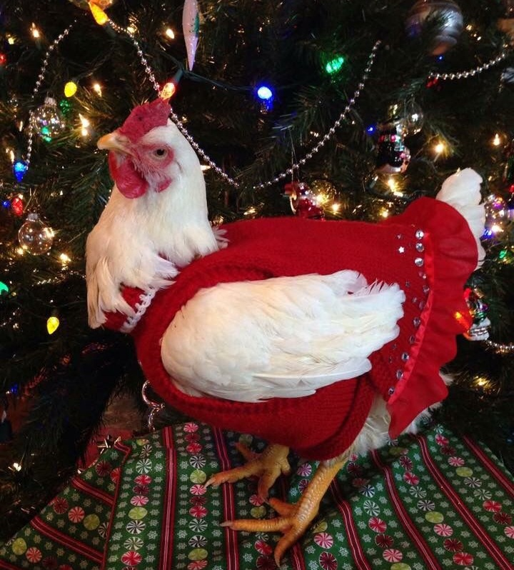

Pollo Navideño
Deliciosa receta de pollo navideño con especias y hierbas aromáticas, perfecto para celebrar en familia.
Deliciosa receta de pollo navideño con especias y hierbas aromáticas, perfecto para celebrar en familia.

Deliciosa receta de lasania con verduras frescas y mayonesa casera, ideal para acompañar tus comidas.
Deliciosa receta de ensalada rusa con verduras frescas y mayonesa casera, ideal para acompañar tus comidas.